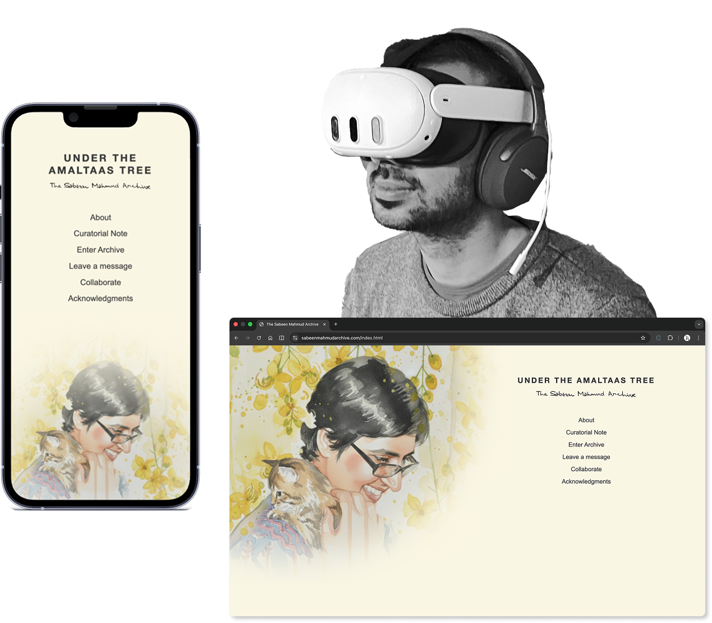
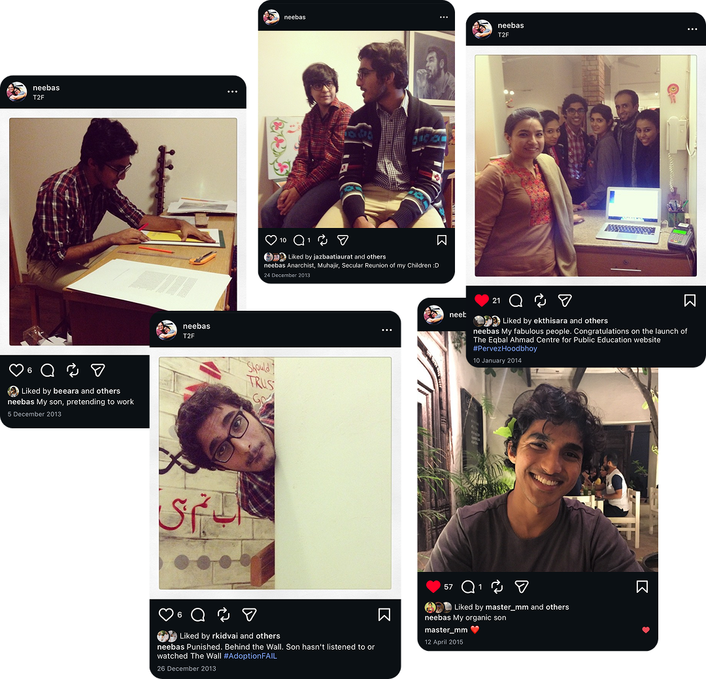

The Sabeen Mahmud Archive
Client:
-
Role:
Designer/Developer/Curator
Year:
2026
Team:
Sabeen Mahmud Forum
A WebVR experience that allows viewers to get to know Pakistani human rights activist & entrepreneur, Sabeen Mahmud.


Sabeen Mahmud (1974 - 2015)
Sabeen Mahmud stood for community, culture and open dialogue and with these principles founded The Second Floor (T2F), a coffee house and community space.
T2F hosted a range of public events like; film screenings, poetry readings, stand-up comedy, and panels on human rights, science lectures, and other topics.
Sabeen brought poets, politicians, artists, and activists together to share ideas over a cup of tea. In 2015 after hosting a panel titled “Unsilencing Balochistan” Sabeen was shot at a signal as she was leaving the event.
A living archive embodies Sabeen's spirit of open dialogue, community, & activism.
Preserves her memory and transfers social knowledge, values, and identity to the next generation.

Images from Sabeen's Instagram account
Inherited Themes
Mediums
Images
Videos
Audios
Documents
Classification:
Artefacts
Memorials
Space
Journals
Autobiographic Data
Biographic Data
Instructional Doc
Interview
Content Catalogue
Total Data:
43.75 GB
Unique Data:
36.88 GB
Cataloged:
31.37 GB
The act of collecting this data began in 2015 by members of the Sabeen Mahmud Forum. This involved photographing Sabeen’s spaces and belongings, scanning family albums, recovering blogs, tweets, social media posts by Sabeen, and interviewing Sabeen’s friends and family. After reaching a critical junction this project was let go as there was no consensus on what form this archive should take.
Stakeholder Map
Identifying stakeholders and their needs was crucial to designing something meaningful. Mapping people interested in Sabeen's legacy and the archive, along with their specific needs and motivations allowed us to focus on primary stakeholders
5. External Audiences
Need an introduction to Sabeen and her work as well as context for the stories and a way to access the archive
4. Pakistani Audiences
Have some knowledge of Sabeen and her work but interested in specific details and aspects.
3. Collaborators & Contributors
Need a place to store and showcase the work done and stories collected that gives them credit.
2. Friends, Family and Colleagues
Need catharsis, healing and an authentic representation of Sabeen and her legacy.
1. Sabeen
Deserves authentic representation, and a place to be honored and remembered in a way that also inspires more young people.
Click on the numbers to learn more about each stakeholder group.

Archival Methodology

| Literature | Learnings |
|---|---|
| "The space of a document, be it visual or audiovisual, becomes the only space in which the performance takes place."
- Nataša Petrešin-Bachelez, Living archive: The performative potential of a document |
A “document” has a performative aspect. This performance establishes a relationship with the viewer. Spatial context matters as document outside it’s context changes meaning, |
| "Performances function as vital acts of transfer, transmitting social knowledge, memory, and a sense of identity through reiterated, or ...‘twice-behaved behavior."
- Diana Taylor, The Archive and the Repertoire: Performing Cultural Memory in the Americas |
Performance is an “act of transfer”, it holds vital cultural/social knowledge and memory |
Early Concept
The initial concept arose out of a visit to Sabeen’s bedroom. Having been preserved just as she left it, this space evoked her and each object told a story. This is how I began to explore the idea of space as interface and artefacts as performers in this space. By linking artefacts with memories I started making associations that helped me select Images and audio files from the dataset.
Using the content that was shared a short trailer was created to explain the concept. This was shared Sabeen’s mother, Mahenaz Mahmud.
View Ideation on Miro
3D scan of Sabeen’s room made using Polycam.
Recreating rooms from photographs and 3D scans led to gaps in spatial data.
For the initial prototype I began drawing the environments. This also solved the problem of scanning spaces that no longer existed or had changed since Sabeen’s death.
The rooms were drawn on top of an Equirectangular grid and then rendered using a watercolour paint style on procreate. The advantage of a digital drawing is also the low effort stake of adding and subtracting from it.
Equirectangular Sketches


Rendered Environments


Designing The Identity
Using Sabeen’s signature and selected character from the last sticky note she wrote, we created a typeface that we could use to create the logo of the archive.

UI & UX Design
Developing the website required an initial wireframe of the interface, experience and userflows. To keep things simple the experience only allows viewers the option to view images, play audios and switch between rooms. These flows were roughly mapped out on Figma and are viewable below.
Exhibition Design
The project culminated in a one day pop-up where visitors were able to try the experience in VR and also learn a bit about the process of making this experience. The exhibition divided the space into three zones; introduction where viewers are oriented with brochures, a curatorial note, and a short introductory video, trial where they can experience the VR or try out on desktop, and feedback where they can leave a comment.


| Technology | Purpose | Why |
|---|---|---|
| HTML5, CSS3, JavaScript | To build the structure, style, and interactivity of the web-based experience. | These technologies are widely supported and allow for a responsive design that can be accessed across different devices. |
| A-Frame (WebVR Framework) | To create immersive 3D environments that run directly in a web browser. | A-Frame simplifies the development of VR experiences and is compatible with various VR headsets and platforms. |
| JavaScript Database (e.g., IndexedDB) | To manage and catalog the archive's content with metadata for easy retrieval and display. | Allows for scalability and efficient handling of large datasets directly in the browser without needing a server-side database. |
| DOM Event System | To enable user interactions within the VR environment, such as clicking on objects to trigger data or actions. | Provides a straightforward way to handle user interactions and enhance the user experience in a web-based environment. |